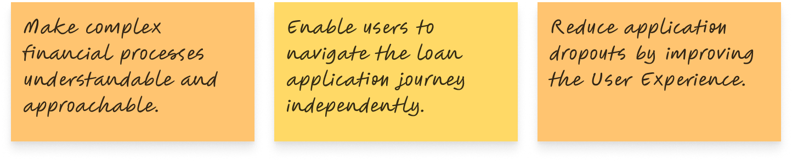

Introduction
In the ever-evolving landscape of technology, AI-powered chatbots have emerged as transformative tools, enhancing user experiences across industries. Over a decade of designing chatbot solutions, I’ve witnessed their evolution firsthand—from rigid, rule-based systems to sophisticated conversational agents capable of personalization and memory.
This case study outlines my journey through three key projects that showcase the evolution of chatbot technology.
Let’s explore these milestones and their impact.
Project 1
Chatbot for Real Estate (2019)
In 2014, recognizing an opportunity to enhance user engagement and streamline the property search process, I undertook a project to improve CommonFloor, one of India’s leading real estate platforms. Through research and collaboration with the product and engineering teams, I conceptualized and designed a chatbot that acted as a static virtual assistant, simplifying navigation and decision-making for prospective property buyers and renters.
Objective:-
To design a chatbot experience that:
- Simplifies property search for users unfamiliar with online real estate platforms.
- Provides curated property recommendations based on user inputs.
- Reduces user dropout rates caused by overwhelming property listings.
- Target Audience: First-time homebuyers and renters, typically aged 25–40, with limited familiarity with digital tools.
- Many users expressed a preference for conversational interfaces that mimic human interactions, helping them feel more confident and less overwhelmed during the property search process.
- Users were overwhelmed by the extensive listings and filters on the platform.
- Many preferred guided interactions rather than open-ended searches.
- A significant number of users abandoned the search due to difficulty in finding relevant properties quickly.
- Navigation Complexity: Simplifying the process for users unfamiliar with real estate terminologies.
- Fixed Inputs: The chatbot was limited to rule-based interactions and couldn’t process free-form user queries.
- Curated Recommendations: Offering meaningful property suggestions without extensive user input.
The decision tree in this case helps simplify complex problems by breaking down the property search process into clear, manageable steps. It guides users through a structured journey for buying, selling, or renting properties, making it easier to navigate through various decisions like location, budget, and property type. By visualizing the flow, it reduces decision fatigue and eliminates ambiguity, allowing users to focus on key factors without feeling overwhelmed. This clear, logical progression ensures that users can make informed choices quickly, improving their overall experience and reducing friction in the process.
Solution
The chatbot was designed as a static, rule-based assistant that provided a guided interaction experience.
- Predefined Queries: Users selected from dropdown menus to refine their search by property type, location, and budget.
- Interactive Filters: The chatbot guided users step-by-step through filtering options, helping them shortlist properties efficiently.
- Quick Recommendations: Based on selected criteria, the chatbot presented 3–5 curated property listings.
- Minimalistic UI: Focused on a clean, distraction-free interface that emphasized dropdowns and quick-action buttons.
- Responsive Design: Optimized for both desktop and mobile devices.
- Clear Feedback Loops: Users received instant confirmation messages after each interaction, ensuring clarity.
- Accessibility First: Ensured that all interactive elements were accessible, with proper color contrast, keyboard navigation, and screen reader compatibility.
- Simplicity Wins: A guided, rule-based approach outperformed open-ended search for novice users.
- Iterative Design: Continuous feedback loops ensured the chatbot met user expectations.
- Scalability: While the chatbot succeeded as a static assistant, it highlighted the need for more adaptive, conversational designs in the future.
Although the project didn’t progress to implementation, and CommonFloor does not currently have a chatbot, the research and design efforts provided critical insights into user behavior and preferences. These learnings can be foundational for future explorations in conversational AI and intelligent property search solutions.
Project 2
DIY Loan Journey Chatbot (2019)
In 2019, the finance industry faced challenges in simplifying loan processes for users. As part of my case study, D.I.Y Loan Journey, I conducted extensive research on simplifying the loan process to make it more understandable for everyone. The main case study can be found here. During this project, I collaborated with a leading financial institution to design a chatbot that merged seamlessly with the loan journey. This integration transformed the process into a user-friendly experience by leveraging natural language processing (NLP) for dynamic, real-time interactions..
Objective: Target Audience: Individuals seeking personal loans, aged 25–45, with varying levels of financial literacy.
- Key Insight: Users often felt intimidated by financial jargon and lengthy applications.
- Preferred Solution: A guided process with clear, concise instructions and real-time assistance.
- Breaking down complex loan terminologies into digestible information.
- Supporting open-ended user inputs for a personalized experience.
- Ensuring accurate responses while maintaining compliance with financial regulations.
- Keyword Detection: Recognizing user queries to provide relevant answers.
- Interactive Assistance: Guiding users step-by-step through the loan application process.
- Document Integration: Allowing users to upload required documents directly within the chat interface.
- Clean UI: A modern, minimalistic interface designed for clarity and ease of use.
- Mobile Optimization: Ensuring accessibility across devices.
- Progress Tracking: Visual indicators to show the user’s position in the loan journey.
- 25% reduction in average loan application time.
- 30% increase in completed applications due to enhanced user experience.
- Improved customer satisfaction ratings for the financial institution.
- NLP Integration: Dynamic responses significantly improved user engagement.
- Iterative Testing: Continuous feedback from real users refined the chatbot’s usability.
- User Empowerment: Simplifying complex processes fostered user confidence and trust.
- AI-Powered Insights: Personalizing recommendations based on user data.
- Multilingual Support: Expanding accessibility to non-English speaking users.
- Voice Integration: Adding voice commands to further simplify interactions.
This project highlighted the transformative potential of AI-driven conversational tools in revolutionizing user experiences within the finance sector. It set a strong precedent for future advancements in digital lending solutions. The detailed case study, including the flow and other aspects of the project, can be found here.
Project 3
MediConnect – Healthcare Redefined (2024)
As part of the MediConnect case study, the project focused on enhancing patient and provider experiences through an intuitive healthcare application. The aim was to streamline appointment management, improve communication, and offer proactive care support, ensuring a user-friendly experience for all stakeholders.
Objective:The objectives were to:
- Simplify healthcare access with a minimal and intuitive application.
- Provide tools for patients to manage appointments, health records, and reminders effectively.
- Enable seamless communication between patients and healthcare providers.
Target Audience: Patients aged 30–60 seeking easy healthcare management and providers aiming to reduce administrative overhead.
- Key Insight: Users required a simple, easy-to-navigate solution that addressed everyday healthcare needs.
- Preferred Solution: A minimalistic design offering essential features for healthcare management and communication.
- Creating an interface that balances simplicity with functionality.
- Ensuring accessibility for users with varying technical proficiency.
- Incorporating features without overwhelming the user experience.
The MediConnect application was designed with a user-first approach. Key features included:
- Streamlined Appointment Management: Easy booking and rescheduling functionalities.
- Proactive Health Support: Automated reminders for medications, follow-ups, and regular check-ups.
- Simple User Flow: A four-screen design to ensure minimal navigation and ease of use.
- Secure Data Handling: Ensuring privacy through encryption and robust security measures.
- Minimalist UI: Focused on clarity and ease of use for users of all ages.
- Accessibility First: Features designed to cater to varying levels of tech-savviness.
- Figma Mockups: Initial designs created collaboratively and iterated to high fidelity.
- Enhanced patient satisfaction: Through simplified workflows and personalized care reminders.
- Reduced provider workload: By automating routine tasks and streamlining communication.
- Improved user engagement: By addressing key pain points with a focus on simplicity.
- Time Efficiency: Delivering effective solutions within tight deadlines reinforced the importance of prioritization and focus.
- User-Centered Design: Simplicity and usability are critical for user adoption, especially in healthcare applications.
- Collaborative Creativity: Leveraging diverse perspectives enhanced the ideation and problem-solving process.
- AI Integration: Expanding personalized insights and treatment recommendations.
- Telemedicine Capabilities: Adding real-time consultation and virtual health assessments.
- Voice Interaction: Improving accessibility through voice-enabled commands.
Conclusion: The MediConnect project illustrates how a focus on user-centered design and collaboration can create impactful healthcare solutions. Explore the mockups and complete process in the MediConnect case study.
Reflection on My UX Design Journey:
Chatbots for Real Estate, Loans, and Healthcare
Looking back on my journey through designing chatbot experiences for CommonFloor, DIY loan journeys, and the healthcare app, I’ve learned valuable lessons that have deeply shaped my approach to UX design and interaction flow. Each project presented unique challenges and opportunities that allowed me to expand my skill set and knowledge in new directions.
My first chatbot design experience was with CommonFloor, focusing on simplifying property searches for users unfamiliar with online real estate platforms. The challenge was creating a system that guided users without overwhelming them. Through predefined queries and dropdown menus, we achieved an efficient, user-friendly experience. This project introduced me to rule-based chatbot design, emphasizing simplicity and ease of use.
Key Takeaways:- The importance of simplicity: Keeping interactions clear and minimalistic led to a more engaging user experience.
- Structured design: Rule-based systems are crucial for guiding users, especially in complex domains like real estate.
- Measuring success: Observing the reduction in search time and improved user engagement validated the effectiveness of this approach.
In 2019, the DIY loan journey chatbot was developed to simplify the loan application process. This project required a natural language processing system that allowed users to enter free-form text. The chatbot had to handle complex financial queries while making the process feel personal and accessible. The project highlighted the importance of context-aware AI and real-time interactions in shaping user satisfaction.
Key Takeaways:- Contextual awareness: Chatbots must understand user input to respond appropriately, particularly in complex topics like finance.
- Real-time interaction: Providing live updates and personalized progress tracking enhances user satisfaction.
- Flexibility: Allowing users to interact in natural language makes the experience more intuitive.
The healthcare app was my latest project, leveraging AI for personalized healthcare suggestions. Balancing AI intelligence with user privacy was the biggest challenge, as healthcare data is highly sensitive. The app offered proactive features like health reminders and appointment scheduling while ensuring accessibility for all users. This project strengthened my AI design skills and reinforced the importance of data security in sensitive domains.
Key Takeaways:- Personalization: AI-driven solutions can transform healthcare by offering tailored care plans and proactive assistance.
- Privacy and security: Maintaining trust through strict data security measures is paramount, especially in healthcare.
- Intuitive user interface: An accessible design is essential for ensuring users can easily interact with complex AI systems.
These three projects have not only refined my technical skills but have also deepened my understanding of how AI can enhance user experiences. I have learned that the key to successful chatbot design lies in simplicity, adaptability, and context-awareness. While my early projects focused on rule-based systems, my later experiences have shown me the power of more dynamic, personalized AI systems.
Looking ahead, I am excited to continue exploring how AI and chatbots can provide even more personalized, intuitive experiences in different industries. From real estate to finance to healthcare, the potential for improving user experiences with AI is immense, and I am eager to contribute to this ever-evolving field.